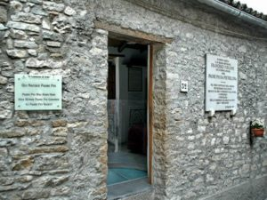
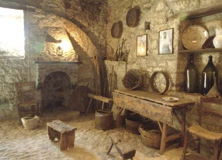
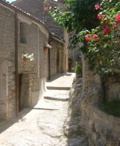
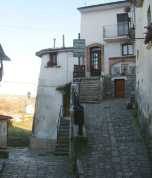
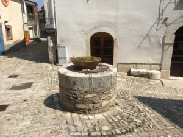
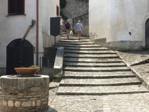
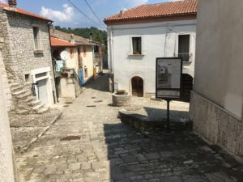
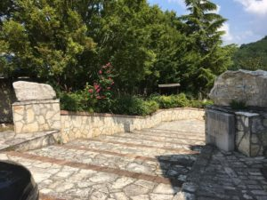
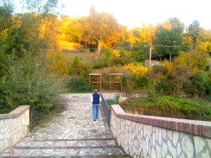

The Rosary Walk Pietrelcina
The Rosary Walk has always been one of our favourite features in Pietrelcina. Firstly let me explain what it is and how it came about.
Pietrelcina is quite a small town set amidst undulating countryside which surrounds it like a folded blanket of green fields and wooded areas. It is very picturesque but, for a farming community, causes one or two problems. Most villagers owned small parcels of land which were handed down through their families and these were scattered widely about the area.
The Forgione family owned a small plot of land on the wide, flat plain of Piana Romana (Roman Plain). They had built a small stone room where they stored some of the produce and also slept overnight if they had worked late and did not want to return to the town.
Since he was a young boy, Francesco would walk along a well worn pathway, through countryside and woodland, with his family members. As they walked, they would recite the rosary. As Francesco grew up, he would follow this 3 km path many, many times, always reciting the rosary as he went.
This pathway has now been partly paved and the mysteries of the rosary displayed on tiled stands at intervals along the way. This is ‘The Rosary Walk’
Retracing Francesco’s Journey
Let us take you on that journey, step by step, from the family home to Piana Romana
We start first at the Forgione home, the birth place of Padre Pio.


On this same street he lived in later life as a Franciscan Friar and Priest for six years.
The Castello region is the highest point in Pietrelcina Town so he would at first walk down the winding slopes and turn the corner down towards the countryside.


Going down more steps, he would pass by the oldest well in the village.

In fact, at one time, this well was the sole source of water for the whole town.


This is the official start of the Rosary Walk which is marked by two large stones on either side of steps descending down to the first bridge and the start of the path he and his family would take through open countryside and woods.
I assume the steps would have been much rougher in his days but now they are beautifully paved and have a viewing terrace half way down.
The bridge at the bottom was damaged by the flood of October 20014 but has been repaired since.


The path through countryside and woods
 Start of the path
Start of the path  Flat path for now
Flat path for now  Continuing along the path
Continuing along the path  Starting to climb
Starting to climb  Nearing the top
Nearing the top  Onwards through woods
Onwards through woods  Looking through trees
Looking through trees  Nearing the Bridge
Nearing the Bridge  The new bridge
The new bridge
Walking from the town to the bridge is the less difficult part of the walk and we did it very often, stopping there to say our rosary before turning back to town. It would take us about 20 to 30 minutes to reach the bridge as we did not hurry or make any great effort but took the one hill at a leisurely pace.
This bridge has a special significance in the story of Padre Pio. The following account is well known in Pietrelcina:
Every day, after he had said Mass, he walked to Piana Romana. On his way he recited the breviary or the Rosary. He greeted and answered courteously all those he met. One day, on the little bridge he had to cross, he beheld the devil in horrible form waiting there in a threatening attitude to attack him and throw him into the ravine. Padre Pio hesitated fearfully for a moment, but soon pulled himself together, made the sign of the cross and put the devil to flight. Piana Romana was Padre Pio’s favourite spot where he gave himself up to prayer and meditation and where he began to suffer the pain of the invisible stigmata….. (from Pray, Hope & Don’t Worry – Issue 33)
Once you cross the bridge, the climb gets much steeper and the ground is rougher. You need a pair of good walking shoes and perhaps a stout stick to continue for the next 100 meters.
To continue to the second part of the walk: click here.
Or you can first read about what happened to the old bridge and then continue on the rest of the walk


{kind=link}
{kind=link}
{kind=link}
{kind=link}
{kind=link}
{kind=link}
{kind=link}
{kind=link}
{kind=link}
{kind=link}
{kind=link}
{kind=link}
{kind=link}
{kind=link}
{kind=link}
{kind=link}
{kind=link}
{kind=link}
{kind=link}
{kind=link}
{kind=link}
{kind=link}
{kind=link}
{kind=link}
{kind=link}
{kind=link}